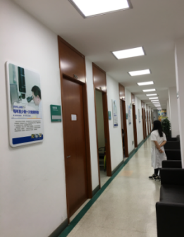
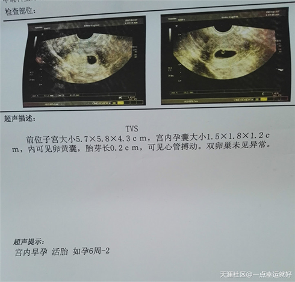
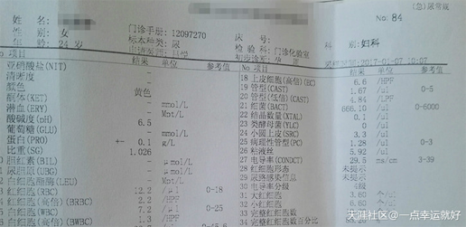

姜卫周 主任医师
[ 27年临床经验 ]
上海计生所中医生殖教授
擅长：中医辨证治疗女性月经疾病、卵巢早衰、不排卵、免疫性不孕.....[详情]
门诊时间：8:00-21:00
京、沪、苏三甲专家领衔，一对一亲诊
网络抢约专家号，省时更方便>>>点击预约
我是一名在校大学生，我们这些正值青春期的青年男女们难免互生情愫，有的时候会忍不住冲动而偷尝禁果，所以有很多的意外都发生了，而我也是其中一员.....[加微信号sztj-fk或者直接点击咨询]。
记得第一次怀孕因为是学生没什么经济来源所以选择的医院是小门诊采用药流，至今让我记忆犹新的是疼痛难忍，因为药流没流干净，[加微信号sztj-fk或者直接点击咨询]我不得不刮宫...
转眼大四了，但是前段时间跟男友亲热没有保护措施，不出意外我果然中标了，但这孩子还是不能要，这次我坚决不会找小门诊去做药流，上次药流的经历历历在目，这次我问了个之前打过胎的闺蜜，她给我介绍了苏州同济医院做无痛人流，全程无痛，我半信半疑，因为之前的疼痛有了阴影。
而后我在网上咨询了一下苏州同济医院，医助态度很好，给我预约挂了个号，而且免挂号费，[加微信号sztj-fk或者直接点击咨询]术前有几项检查也是免费的，还问我是否有医保，有的话带来可以使用，但是我没有。
第二天我来到苏州同济医院，在前台跟导医说我预约了，然后直接带领我到涂瑷琳医生诊室门口，不用排队，导医说预约过都是不用排队等候的。[加微信号sztj-fk或者直接点击咨询]
医院就诊拍照

涂瑷琳医生办公的地方只有我和医生还有我男友了，涂医生对我的情况仔细询问后,[加微信号sztj-fk或者直接点击咨询]建议我们做PAC微管可视无痛人流，我问痛不痛的时候，涂医生说全程无痛，说是采用2毫米生物材料微管，光滑柔软，可轻柔的把宫腔内的孕囊吸出来，无需扩宫，也不伤宫颈，不影响再孕，更准确更安全。[加微信号sztj-fk或者直接点击咨询]我终于可以放心了。之后涂医生又对我详细介绍了人流后注意事项。态度非常好。[加微信号sztj-fk或者直接点击咨询]
之后我们下去做一些人流的前的常规检查，如果检查都正常就可以进行手术了。
人流前检查宫内早孕

这是常规的检查（免费的）

检查一切正常后开始手术，躺在手术床上打完麻药后轻松睡去 一会醒来后我一点都不觉的痛，[加微信号sztj-fk或者直接点击咨询]然后在医院配了一点消炎的药，涂医生让我过一星期来复查然后就可以回去了，真的感谢同济医院，我原本以为无痛人流会很贵，结果花了一千多点，跟上次药流差不多。主要是全程真的没一点疼痛。[加微信号sztj-fk或者直接点击咨询]
苏州同济医院微信号：sztj-fk或者直接扫描在线预约二维码
热门评论
我之前也做过药流，真的痛不欲生，还好后面怀孕做的无痛人流，真的一点都不痛，非常棒。
我没做过药流第一次做人流就是无痛的，是闺女介绍我来的同济医院，医保可以报销，还挺便宜的。
我也是闺女介绍去的同济医院，手术前有好几项检查都是免费的，而且态度非常好，感谢同济医院。
我是在网上预约的，去了不用排队，一人一个诊室感觉很私密。态度也很好，价格也不贵。
微信号： sztj-fk(←微信添加关注)
人流一共多少钱？点击咨询涂主任说： 人流最佳时间在35天-45天，那时的孕囊大小适中，不但在B超下清晰可见，而且也容易取出；同时子宫壁较厚，出血少，对子宫的伤害较小，不但能增加手术较安全系数，而且术后的恢复也较快。
涂主任还指出： 在某些小门诊医院，由于资源有限，大多采用药流，即使使用人流手术一般由年轻医生操作，经验尚浅。价格很低，但术后并发症多。可能伴随月经不调，或者导致女性不孕，苏州同济医院是二级综合医院，医院一直坚持小手术，也用大医生。每一台PAC无痛人流，都由拥有20多年手术经验的万例无事故医生亲自操作。
超导微管可视无痛人流技术，是在计算机全程可视监控引导下，对受术者实施短效静脉麻醉后，医生快速、准确地摘除“孕囊”。
超导微管可视人流技术优势
1)无痛苦：采用短效静脉麻醉，手术者在40秒内进入睡眠状态，患者在睡眠状态下接受手术，减轻了恐惧感，且无疼痛刺激，术中、术后出血少，身体恢复快。
2)准确定位：手术过程由超导微管可视技术引导、监控，在显示屏幕上即可直接观察宫腔内部状况，确定孕囊方位，对绒毛进行定点吸引。可视状态让手术更加安全，避免了不当操作。
3)提前预警性：采用超导微管可视技术，直接观察宫腔内部状况，可提前发现隐藏的宫内疾患，避免了意外的出现。
4)无并发症：超导微管可视技术减少了宫内损伤，解决了传统人流及药流的后遗症，避免了一些并发症的发生。


同济特聘专家
Special expert of Tongji University
苏州同济妇科医院
苏州16年老牌妇科医院
医院地址：苏州市南环路36号 姑苏卫人网审[2015]4号
门诊时间：08：00-20：00 （节假日不休）
网站备案号：苏ICP备10220779号-36 备案查询
苏公网安备：32050802010048